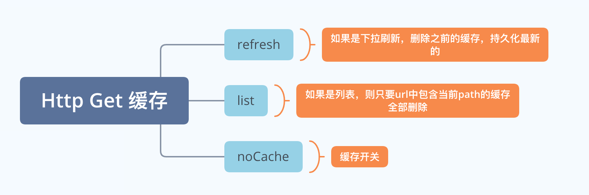
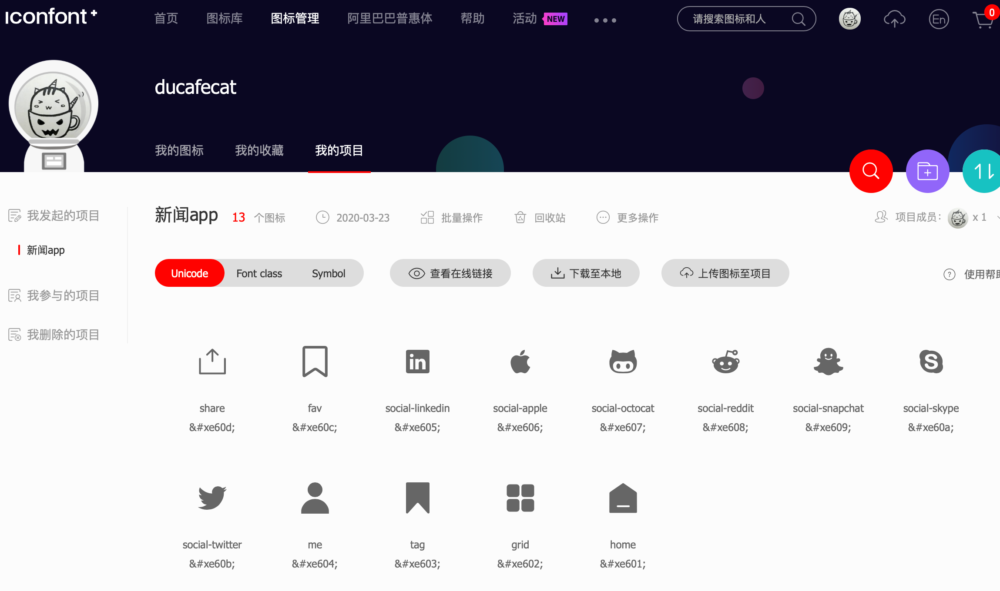
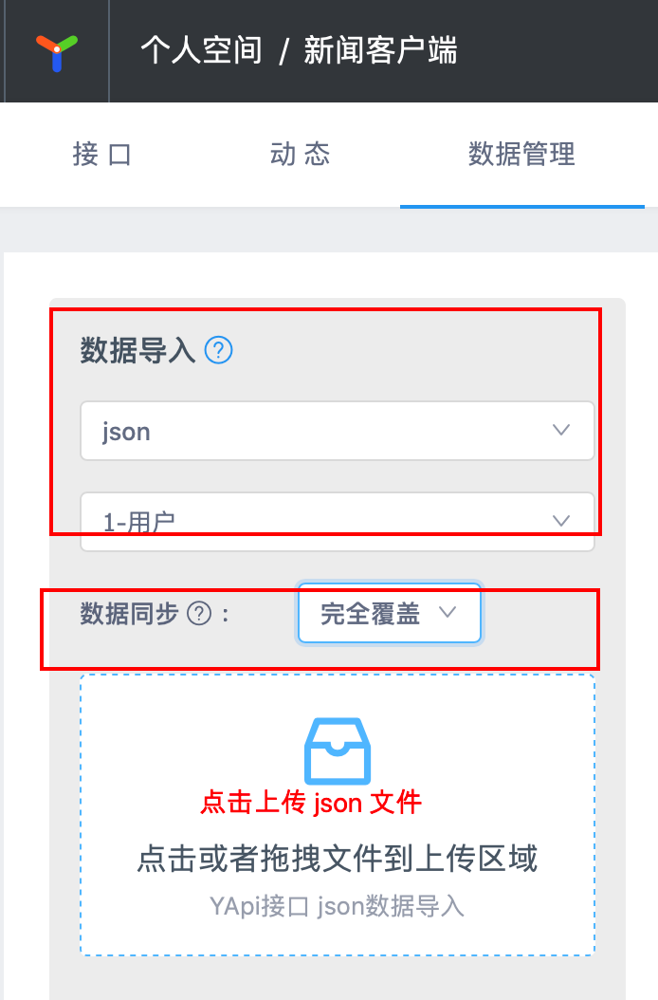
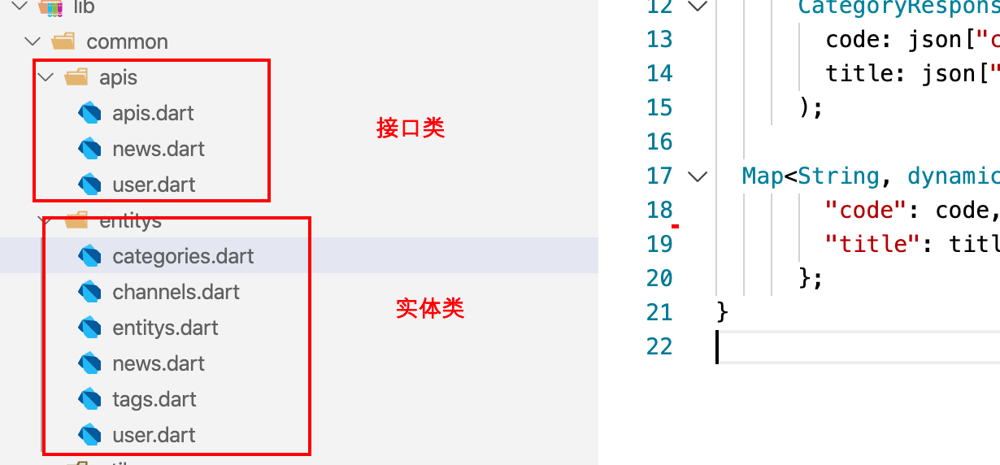

本节目标
- 全局数据、响应数据、持久化
- http get 缓存
- http proxy 代理
- fiddle 抓包工具
- iconfont 字体库
- 主界面搭建
- BottomNavigationBar 导航控件
- 编写 api 接口代码
1 客户端数据管理
1.1 数据类型
- 全局数据
存储在内存
用户数据、语言包
- 响应数据
存储在内存
用户登录状态、多语言、皮肤样式
Redux、Bloc、provider
- 持久化
APP 保持磁盘上
浏览器 cookie localStorage
1.2 编写全局管理
- lib/global.dart
1 | /// 全局配置 |
1.3 调用运行
- lib/main.dart
1 | void main() => Global.init().then((e) => runApp(MyApp())); |
2 Http 内存缓存
缓存策略

代码
- 缓存工具类 lib/common/utils/net_cache.dart
1 | import 'dart:collection'; |
- dio 封装 lib/common/utils/http.dart
1 | // 加内存缓存 |
3 Http Proxy 代理 + Fiddle 抓包
安装 Fiddle
https://www.telerik.com/download/fiddler-everywhere
dio 加入 proxy
- lib/common/utils/http.dart
1 | if (!Global.isRelease && PROXY_ENABLE) { |
4 Iconfont 字体库
引入流程
- 登录
- 创建字体项目

- 字体文件放入
assets/fonts/iconfont.ttf
- pubspec.yaml
1 | fonts: |
- lib/common/utils/iconfont.dart
1 | import 'package:flutter/material.dart'; |
自动生成字体库代码
https://github.com/ymzuiku/iconfont_builder
- 拉取项目、编译
1 | # 拉取项目 |
- 参考我的配置
1 | # flutter sdk |
- 生成字体类
1 | cd 你的项目根目录 |
5 编写 api 业务代码
- yapi 配置
导入 doc/api.json

- 代码

6 搭建主界面框架
- 框架页面 lib/pages/application/application.dart
1 | ... |
7 编写首页代码
- 首页代码 lib/pages/main/main.dart
1 | ... |
- 抽取新闻分类 lib/pages/main/categories_widget.dart
1 | Widget newsCategoriesWidget( |
蓝湖设计稿
https://lanhuapp.com/url/wbhGq
YAPI 接口管理
git 代码
https://github.com/ducafecat/flutter_learn_news/releases/tag/v1.0.5
工具
VSCode 插件
视频
© 猫哥
![微信分享二维码]()